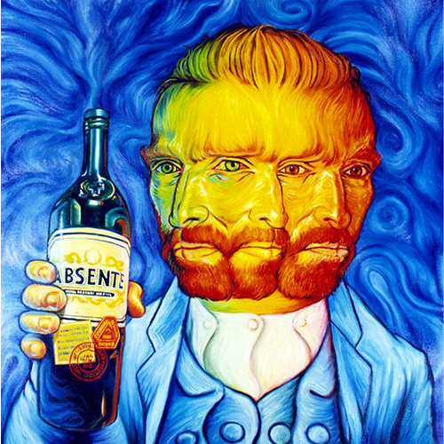
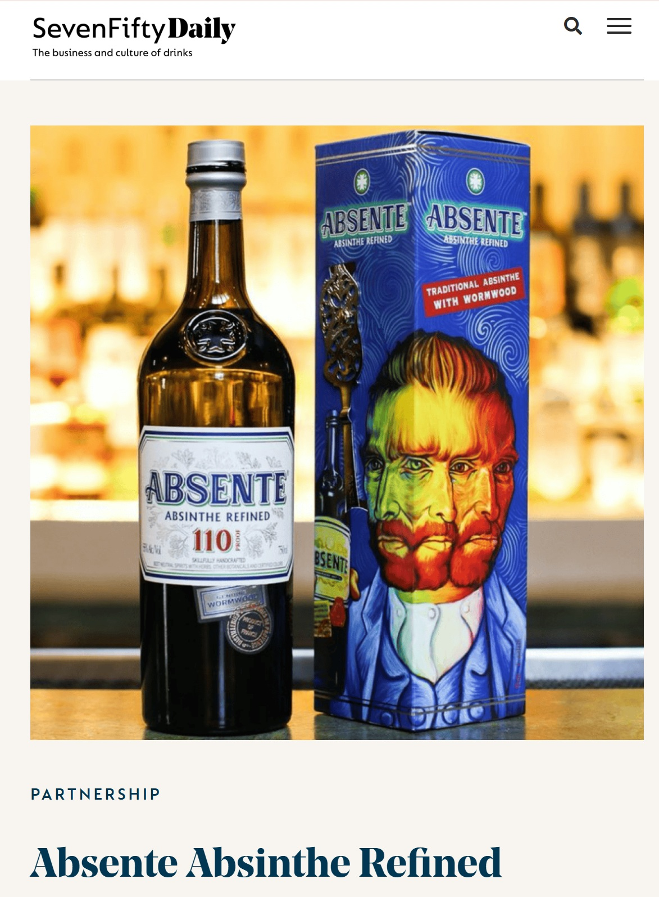

Literature
Ron English, Popaganda: The Art & Subversion of Ron English (San Francisco: Last Gasp, 2001), p. 150. ISBN 1-887128-60-3.
Notes
In Popaganda, this work was erroneously reported as 36 × 36 inches.
The packaging design appears on SevenFifty Daily’s brand page for Absente Absinthe Refined, available here, accessed April 16, 2026.
A poster reproducing this image appears on an eBay listing titled 2007 ORIGINAL Absinthe Absente Refined Ad Poster Ron English 24" Advertisement, available here, accessed April 16, 2026.
This work references Vincent van Gogh’s self-portrait.

Ancillary Documentation
